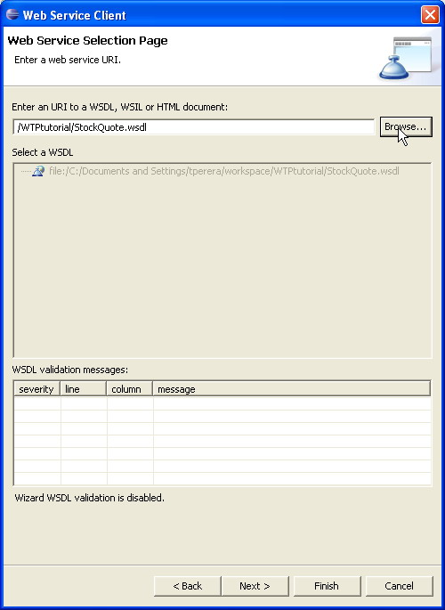
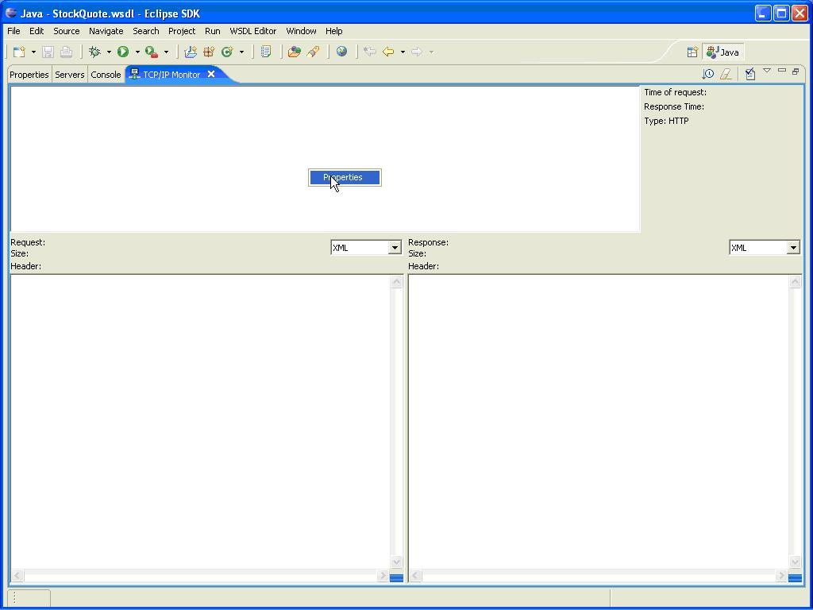

| Eclipse Corner Article |

Summary
The Web Tools Platform (WTP) Project extends Eclipse with a set of open-source Web Application Development tools and API's. This tutorial focuses on its Web Service application development support. The tutorial will follow a common life cycle of a Web Service application through Service Discovery, WSDL identification, Stub Generation, Testing and WS-I compliance verification.By Tyrell Perera, Virtusa Corp.
May 02, 2006
The Web Tools Platform (WTP) Project extends Eclipse with a set of open-source Web services development tools and API's. This tutorial gives an overview of the project and focuses on its Web Services support.
At present the project is divided into three sub projects:
• Web Standard Tools (WST)
• J2EE Standard Tools (JST)
• Java Server Faces Tools (JSF)
The Web Standard Tools subproject contains support for XML Web services, including tools based on standards defined by the W3C, Oasis, WS-I and others. WS-I is an open industry organization chartered to promote Web services interoperability across platforms, operating systems and programming languages. The organization’s diverse community of Web services leaders helps customers to develop interoperable Web services by providing guidance, recommended practices and supporting resources.
The J2EE Standard Tools subproject contains support for standards defined by the Java Community Process, such as JAX-RPC and JSR-109, and for reference implementations of these standards, such as Apache Axis. The project contains both a set of tools for Web services developers and a set of API's for Web services tool creators.
The Java Server Faces Tools project will provide tools and API's for JSR 127 which is part of Java EE 5. The project will operate as an incubator during the WTP 1.0 development cycle and will become a component of the JST subproject in WTP 1.5.
Collectively, these three sub projects include tools for HTML, XML, Web Services, J2EE and JSF development along with Server tools for integrating application servers, including Apache Tomcat, Apache Geronimo, JBoss, IBM WebSphere and BEA WebLogic.
 This tutorial uses the Eclipse
Web Tools Platform 1.0 and Apache Tomcat 5.5 for it's demonstrations. The locations
for downloads are given in the References and Resources section
at the end.
This tutorial uses the Eclipse
Web Tools Platform 1.0 and Apache Tomcat 5.5 for it's demonstrations. The locations
for downloads are given in the References and Resources section
at the end.
Although WTP provides many tools that are useful in Web Application development, this tutorial will focus on the tools that are directly related to Web Services development, testing and deployment. These tools, mostly integrated under the Web Standards Tools sub project, are;
1. Web Service Explorer
2. WSDL/XSD Editor
3. Web Service Wizard and
4. WS-I Test Tools
In the following sections of this tutorial, we will look into the usage of these tools in Web Services development. We will consider a scenario where we are entrusted to implement a Web Service client for a 'Stock Quote' service. Using the Eclipse WTP, we will;
At each stage of the tutorial, we will look at a demonstration of how the activities described can be done in the Eclipse WTP.
The Web Services Explorer helps in the Discovery,
Testing and Publishing of Web Services.
In order to build a client, we need to first find an exposed Web Service, which
satisfies our requirements. After finding several candidates from the published
UDDI registry information, it is only natural to test the functionality of the
methods provided by the services. The 'Web Services Explorer' provided by the
Eclipse WTP provides support for each of these actions as outlined below.
1. Discovery
UDDI is an acronym for Universal Description, Discovery, and Integration. A platform-independent, XML-based registry for businesses worldwide to list themselves on the Internet. UDDI is an open industry initiative (sponsored by OASIS) enabling businesses to publish service listings and discover each other and define how the services or software applications interact over the Internet. A UDDI business registration consists of three components:
1. White Pages - address, contact, and known identifiers;
2. Yellow Pages - industrial categorizations based on standard taxonomies; and
3. Green Pages - technical information about services exposed by the businessUDDI is nominally one of the core Web Services standards. It is designed to be interrogated by SOAP messages and to provide access to WSDL documents describing the protocol bindings and message formats required to interact with the web services listed in its directory.
WS-Inspection is a web service specification for "discovery documents" developed in a joint effort by Microsoft and IBM. WS-Inspection lists groups of web services and their endpoints in an XML format. Currently, other standards are being used for this purpose, such as Microsoft's DISCO. It is expected that WS-Inspection will eventually replace these standards to become the universally accepted discovery standard for web services.
The Web Services Description Language (WSDL) is an XML format published for describing Web services. Version V 1.1 has not been endorsed by the World Wide Web Consortium (W3C), however it has released a draft for version 2.0 on May 11, 2005, that will be a W3C recommendation, and thus endorsed by the W3C.
2. Test
• Dynamic invocation based on WSDL
• View SOAP messages
3. Publish
• Publish WSDL into UDDI Registries
In the demonstration below we will 'search' a UDDI registry using the Eclipse WTP and filter the results, in order to obtain a viable candidate service for our client. Then we will invoke some 'service operations' to check the actual outputs and finally 'import' the service WSDL to our workbench.
 Make sure that you are
in the J2EE Perspective in Eclipse. In the J2EE perspective,
clicking the 'Launch Web Services Explorer' button in the Eclipse WTP tool bar
will launch the Web Services Explorer in your default web browser (in this instance,
Mozilla Firefox). The default registry queried is the IBM Test UDDI registry.
Make sure that you are
in the J2EE Perspective in Eclipse. In the J2EE perspective,
clicking the 'Launch Web Services Explorer' button in the Eclipse WTP tool bar
will launch the Web Services Explorer in your default web browser (in this instance,
Mozilla Firefox). The default registry queried is the IBM Test UDDI registry.
Figure 1 - Eclipse WTP workbench with the ' Launch Web Services Explorer' button highlighted
In this tutorial we will use the 'XMethods' UDDI registry to get ourselves familiar with the Web Services Explorer.
 Select the registry from
the drop down list, register for an account, activate the account and we are
ready to move forward.
Select the registry from
the drop down list, register for an account, activate the account and we are
ready to move forward.
Click the 'Go' button to begin exploring the registry.
Figure 2 - The Web Services Explorer
After accessing the registry, we need to find a Web Service to work with.
 Click the 'Find' button
and type 'Stock Quote Services' as the name of this query.
In the name text box, type 'Stock Quote' (which we
know exists). In the combo box you get three selections as Businesses,
Services or Service Interfaces.
Select ‘Services’ there. Click ‘Go’ to execute the search.
Click the 'Find' button
and type 'Stock Quote Services' as the name of this query.
In the name text box, type 'Stock Quote' (which we
know exists). In the combo box you get three selections as Businesses,
Services or Service Interfaces.
Select ‘Services’ there. Click ‘Go’ to execute the search.
Figure 3 - Searching for exposed Web Services
Figure 4 - Search query results displayed
 Click on one of the results
to view service information. Then click 'Add To WSDL Page' to add this service
to the WSDL page to further explore it.
Click on one of the results
to view service information. Then click 'Add To WSDL Page' to add this service
to the WSDL page to further explore it.
Figure 5 - Add to WSDL action selected
We can explore and invoke WSDL operations in the WSDL Page. In this particular service, we can invoke the operation available to get a Stock Quote for a given symbol string. This is good because we can actually try out the service methods and verify whether the expected output is provided by them.
 Type 'IBM' and check the
'Status' panel for the returned data.
Type 'IBM' and check the
'Status' panel for the returned data.
Figure 6 - Invoking a WSDL operation
After exploring and finding our services, the next step is to start using them in our Web Applications. In order to do this, we need to create Client stubs along with Web Service Emulators (to test our clients). Using the Eclipse WTP we can import the WSDL of the Web Service explored into the workbench.
 Let's try this using the
steps below.
Let's try this using the
steps below.
1. Create a simple project in your Eclipse WTP workbench (Ex: WTPtutorial)
2. Click 'Import WSDL To Workbench' button in the web services explorer, as illustrated below
3. Select the appropriate project to import the WSDL to (in this instance, WTPtutorial)
4. Give a name to the generated WSDL file in the project.
Figure 7 - Importing the WSDL of the service to the workbench
As described previously, The Web Services Description Language (WSDL) is the XML format published for describing Web services. WSDL describes the public interface to the web service. This is an XML-based service description on how to communicate using the web service; namely, the protocol bindings and message formats required to interact with the web services listed in its directory. The supported operations and messages are described abstractly, and then bound to a concrete network protocol and message format.
WSDL is often used in combination with SOAP and XML Schema to provide web services over the internet. A client program connecting to a web service can read the WSDL to determine what functions are available on the server. Any special data types used are embedded in the WSDL file in the form of XML Schema. The client can then use SOAP to actually call one of the functions listed in the WSDL.
An XML Schema Definition (XSD) is an instance of an XML schema written in the
W3C's XML Schema language. An XSD defines a type of XML document in terms of
constraints upon what elements and attributes may appear, their relationship
to each other, what types of data may be in them, and other things.
The WSDL/XSD Editor provided by the Eclipse WTP provides the developer with
functionality expected from an advanced editor such as;
• Graphical and Source editing modes
• Seamless integration for editing inline XSD
• Content Assist
• Pop-up actions
• Binding Wizard
• Validation, including WS-I profiles
• Extensible for WSDL extension elements
Illustrated below is the WSDL imported from the above section. It is displayed in the WSDL editor running in ‘graphical’ mode.
Figure 8 - The WSDL editor running in graphical mode
 We will try the editor following
the steps below.
We will try the editor following
the steps below.
1. Open “StockQuote.wsdl” in WSDL Editor
2. Go into graphical view of XML schema for messages
3. Navigate into “GetQuote” element
4. Switch to Source tab
5. Navigate using linked Outline and Properties views
In the illustration below, we can see the editor in 'Source' mode along with the Eclipse workbench content outline.
Figure 9 - The WSDL Editor running in 'Source' mode, with 'Content Outline' and syntax highlighting
The next stage in the tutorial is to start creating and accessing web services. The Eclipse WTP Web Services Wizard provides the tools for doing just that.
The wizard;
1. Supports generate/deploy/test/publish lifecycle
2. Configures project, server, and SOAP engine
3. Has highly extensible
In this demonstration, we will create a Web Service client for our 'Stock Quote' service. We will follow the Generate, Deploy, Test and Publish life cycle.
First we must configure our server in the Eclipse WTP workbench. This demonstration will use the Apache Tomcat server.
 Go to the Menu File ->
New -> Other and Select Servers. Fill your server information as illustrated
in the Add New Server wizard.
Go to the Menu File ->
New -> Other and Select Servers. Fill your server information as illustrated
in the Add New Server wizard.
Figure 10 - Beginning to add a new server
Figure 11 - Selecting the server 'type'
 The steps are illustrated
in the following screen shots. They can be briefly outlined as;
The steps are illustrated
in the following screen shots. They can be briefly outlined as;
1. Run Web Service Client Wizard to generate Java proxy and JSP test page with
TCP/IP monitor
Go to Menu File -> New -> Other. Expand 'Web Services'.
Select 'Web Service Client'. Click 'Next'.
Figure 12 - Beginning to create a new WEb Service client
2. Select the 'Client proxy type' as 'Java Proxy'. Make sure that you select the 'Test the Web service' and 'Monitor the web service' options.
Figure 13 - Selecting the options for the generated Web Service client
3. Click 'Browse' and select the 'StockQuote.wsdl' file as the WSDL document.

Figure 14 - Locating the imported WSDL
4. Type 'StockQuoteClient' as the Client Project. All the generated code will be organized under this project in the Eclipse WTP.
Figure 15 - Giving a name for the project, which will contain the generated client stubs
5. Click 'Next' in this page. No modifications necessary.
Figure 16 - Final options before code generation
6. If your Tomcat server is stopped, you might get this screen. Click 'Start Server' to start the server. Once the server is started successfully, click 'Next'.
Figure 17 - Start the Tomcat server
7. In this screen select the option 'Run test on server', since it's not selected by default. This will enable us to test the Web service in our Tomcat server with the Eclipse WTP generated JSP's. Click 'Finish' to complete the wizard.
Figure 18 - Selecting the service testing options
8. Finally you can see the newly created project in the Eclipse WTP workbench (Under 'Dynamic Web Projects'), along with the generated files.
Figure 19 - The generated code, displayed in the workbench
 Here we are setting the
end point of the web service (using setEndPoinnt() method) as ‘http://localhost:9913/stockquote.asmx’
instead of ‘http://www.webservicex.com/stockquote.asmx’. We do this in order
to monitor our SOAP requests using TCP/IP monitor.
Here we are setting the
end point of the web service (using setEndPoinnt() method) as ‘http://localhost:9913/stockquote.asmx’
instead of ‘http://www.webservicex.com/stockquote.asmx’. We do this in order
to monitor our SOAP requests using TCP/IP monitor.
Figure 20 - Testing using the generated JSP's hosted in the Tomcat server
 Now go to the Menu Window
-> Show View -> Other. Expand Debug and select TCP/IP monitor. This will
launch the TCP/IP monitor GUI. Right click as illustrated and select Properties.
Now go to the Menu Window
-> Show View -> Other. Expand Debug and select TCP/IP monitor. This will
launch the TCP/IP monitor GUI. Right click as illustrated and select Properties.

Figure 21 - The TCP/IP monitor GUI
 In the Properties dialog
click Add. In the next dialog, enter 9913 as monitoring port and the ‘real’
end points details as illustrated below. Click OK and Start to begin monitoring.
In the Properties dialog
click Add. In the next dialog, enter 9913 as monitoring port and the ‘real’
end points details as illustrated below. Click OK and Start to begin monitoring.
What happens here is that, all requests going to the real endpoint will be monitored by the TCP/IP monitor. Hence, we get the opportunity to intercept and view all SOAP messages and debug if required.
Figure 22 - Port mapping in the TCP/IP monitor
Now that we have all this set up, let’s fire a test and see everything in action.
 Right click the project
in the workbench. Click Run As -> Run on Server. The test JSP page will come
up. Set the end point as described above. Make sure the TCP/IP monitor is configured
and running as illustrated above.
Right click the project
in the workbench. Click Run As -> Run on Server. The test JSP page will come
up. Set the end point as described above. Make sure the TCP/IP monitor is configured
and running as illustrated above.
 Click on the getStockQuote()
method. Input a symbol (ex: ‘ibm’). If all is well you should get data similar
to the following screen shot.
Click on the getStockQuote()
method. Input a symbol (ex: ‘ibm’). If all is well you should get data similar
to the following screen shot.
Figure 23 - Testing the service, while the SOAP messages are intercepted by the TCP/IP monitor
The Web Services Interoperability Organization is an open industry effort chartered
to promote Web Services interoperability across platforms, applications and
programming languages. It acts an a standards integrator to help Web services
advance in a structured, coherent manner. The WS-I consists of approximately
130 member organizations of which 70% are vendors and 30% are end-user organizations.
It has a strong non-U.S. membership, including the very influential Japan SIG.
1. Achieve Web services interoperability by integrating specifications, promoting
consistent implementations and providing a visible representation of conformance.
2. Accelerate Web services deployment by offering implementation guidance and
best practices, delivering tools and sample applications and providing a implementer’s
forum where developers can collaborate.
3. Encourage Web services adoption by building industry consensus to reduce
early adopter risks, providing a forum for end users to communicate requirements
and raising awareness of customer business requirements
The WS-I Compliance tools in Eclipse WTP helps the developer to verify interoperability of the web services developed. These tools are developed in the Eclipse Web Service Validation Tools (WSVT) Project and supports;
• WS-I Basic Profile 1.0/1.1
• Simple SOAP Binding Profile 1.0 and
• Attachments Profile 1.0
The Eclipse WTP provides us with;
1. A WSDL 1.1 Validator and
2. A SOAP 1.1 Message Monitor/Analyzer
 Go to the Menu Window ->
Preferences. Expand Web Services. Select Profile Compliance and Validation
Go to the Menu Window ->
Preferences. Expand Web Services. Select Profile Compliance and Validation
We can set the desired levels of WS-I compliance validations here.
Figure 24 - Setting the WS-I compliance levels
 Click the appropriate
button from the TCP/IP monitor GUI as illustrated below.
Click the appropriate
button from the TCP/IP monitor GUI as illustrated below.
Figure 25 - Launching the Logging Wizard
Figure 26 - Specifying a logging file
Figure 27 - Selecting the WSDL for the WEb Service
After setting everything up as illustrated, we can validate the message log file as shown in the following screen shot. Any issues will be listed in the Problems view of the workbench.
Figure 28 - Validating the WS-I log file
This tutorial illustrated a common life cycle of a Web Services application, in order to highlight the support rendered in its development, from the Eclipse Web Tools platform. This tutorial is in no way complete, since it would require a book to highlight all the features offered by the Eclipse WTP for Web Services and Web Application developers. Further information on the features of the Eclipse WTP can be found in the Eclipse WTP forums and mailing lists.